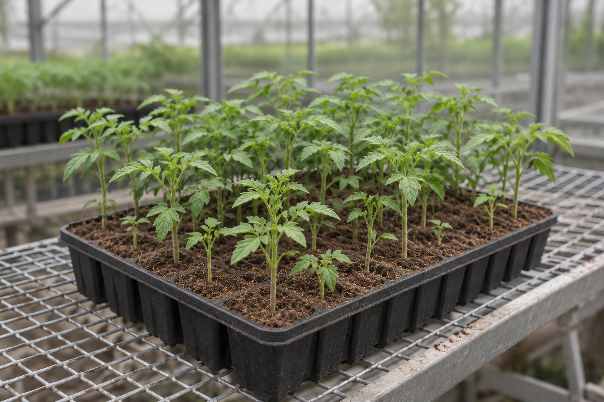

Internal comparison page, not linked from the site
With and without: three options.
Try each one on phone and desktop, then tell me which to put on the homepage.
Option A
The lens.
Move over the tray. On a phone, drag the glass.

 Without biohumus
Without biohumus
With biohumus
Option B
The rising line.
Just keep scrolling. The surface line rises and the tray fills in.
Without biohumus
With biohumus
Option C
Feed and grow.
Press the button and watch the same tray with biohumus in the mix.